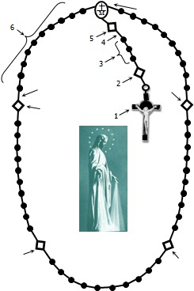
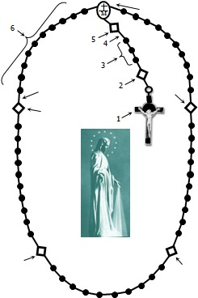

STEPS FOR PRAYING THE ROSARY (please follow the diagram below):
1. Make the Sign of the Cross and pray the Apostles Creed
2. Pray for Pope Leo and for his intentions for July: For formation in discernment. Let us pray that we might again learn how to discern, to know how to choose paths of life and reject everything that leads us away from Christ and the Gospel. Pray the "Our Father"
3. Pray three Hail Marys for Faith, Hope and Love
4. Pray the St. Michael Prayer, the Glory Be and the Fatima prayer
5. Announce the First Mystery; Pray for the first intention and then pray the Our Father
6. Pray ten Hail Marys, while meditating on the Mystery
7. Pray the Glory Be and the Fatima prayer
8. Announce the Second Mystery; Pray for the second intention; pray the Our Father;
9. Repeat steps 6, 7 and 8 above, continue with the 3rd, 4th, 5th Mysteries in the same manner.
10. Pray the Hail Holy Queen, the Rosary prayer, the Memorare
and the Litany of Mary.
11. Make the Sign of the Cross
1. Make the Sign of the Cross and pray the Apostles Creed
2. Pray for Pope Leo and for his intentions for July: For formation in discernment. Let us pray that we might again learn how to discern, to know how to choose paths of life and reject everything that leads us away from Christ and the Gospel. Pray the "Our Father"
3. Pray three Hail Marys for Faith, Hope and Love
4. Pray the St. Michael Prayer, the Glory Be and the Fatima prayer
5. Announce the First Mystery; Pray for the first intention and then pray the Our Father
6. Pray ten Hail Marys, while meditating on the Mystery
7. Pray the Glory Be and the Fatima prayer
8. Announce the Second Mystery; Pray for the second intention; pray the Our Father;
9. Repeat steps 6, 7 and 8 above, continue with the 3rd, 4th, 5th Mysteries in the same manner.
10. Pray the Hail Holy Queen, the Rosary prayer, the Memorare
and the Litany of Mary.
11. Make the Sign of the Cross
THE TEN PRAYERS OF THE ROSARY
1. Sign of the Cross [GEN 18:1-2 1JN 5:7]
In the name of the Father and of the Son and of the Holy Spirit. Amen.
2. Apostles' Creed [GEN 1:1 LUK 1:35 JHN 1:1 MAT 28:6 MAT 16:18]
I believe in God, the Father almighty, Creator of heaven and earth, and in Jesus Christ, His only Son, our Lord, who was conceived by the Holy Spirit, born of the Virgin Mary, suffered under Pontius Pilate, was crucified, died and was buried; He descended into hell; on the third day He rose again from the dead; He ascended into heaven, and is seated at the right hand of God the Father Almighty, from there He will come to judge the living and the dead. I believe in the Holy Spirit, the Holy Catholic Church, the communion of Saints, the forgiveness of sins, the resurrection of the body, and life everlasting. Amen
3. Our Father [PSA 89:26 WIS 2:16 JHN 20:17 MAT 6:9-13]
Our Father, who art in heaven, hallowed be thy name. Thy kingdom come, Thy will be done, on earth as it is in heaven. Give us this day our daily bread, and forgive us our trespasses, as we forgive those who trespass against us, and lead us not into temptation, but deliver us from evil. Amen.
4. Hail Mary [LUK 1:28 LUK 1:48 MAT 2:11 2TH 3:1]
Hail Mary, full of grace, the Lord is with you; blessed are you among women, and blessed is the fruit of your womb, Jesus. Holy Mary, Mother of God, pray for us sinners, now and at the hour of our death. Amen.
1. Sign of the Cross [GEN 18:1-2 1JN 5:7]
In the name of the Father and of the Son and of the Holy Spirit. Amen.
2. Apostles' Creed [GEN 1:1 LUK 1:35 JHN 1:1 MAT 28:6 MAT 16:18]
I believe in God, the Father almighty, Creator of heaven and earth, and in Jesus Christ, His only Son, our Lord, who was conceived by the Holy Spirit, born of the Virgin Mary, suffered under Pontius Pilate, was crucified, died and was buried; He descended into hell; on the third day He rose again from the dead; He ascended into heaven, and is seated at the right hand of God the Father Almighty, from there He will come to judge the living and the dead. I believe in the Holy Spirit, the Holy Catholic Church, the communion of Saints, the forgiveness of sins, the resurrection of the body, and life everlasting. Amen
3. Our Father [PSA 89:26 WIS 2:16 JHN 20:17 MAT 6:9-13]
Our Father, who art in heaven, hallowed be thy name. Thy kingdom come, Thy will be done, on earth as it is in heaven. Give us this day our daily bread, and forgive us our trespasses, as we forgive those who trespass against us, and lead us not into temptation, but deliver us from evil. Amen.
4. Hail Mary [LUK 1:28 LUK 1:48 MAT 2:11 2TH 3:1]
Hail Mary, full of grace, the Lord is with you; blessed are you among women, and blessed is the fruit of your womb, Jesus. Holy Mary, Mother of God, pray for us sinners, now and at the hour of our death. Amen.
Prayers of the Rosary, continued:
5. Glory Be [1JN 5:7 2TH 1:2 MAT 28:19 EPH 3:21]
Glory be to the Father, the Son, and the Holy Spirit. As it was in the beginning is now and ever shall be, world without end. Amen
6. Fatima prayer
O my Jesus, forgive us our sins, save us from the fires of Hell and lead all souls to Heaven, especially those who are most in need of your mercy. Amen
7. Hail Holy Queen [REV 12:1 SIR 24:25 GEN 3:23 GEN 3:15]
Hail Holy Queen, Mother of mercy; Hail our life, our sweetness and our hope! To thee do we cry, poor banished children of Eve; to thee do we send up our sighs, mourning and weeping in this valley of tears! Turn then, most gracious advocate, thine eyes of mercy toward us; And after this, our exile, show unto us the blessed fruit of thy womb, Jesus. O clement, O loving, O sweet Virgin Mary!
Leader: Pray for us, O Holy Mother of God-
Response: That we may be made worthy of the promises of Christ.
8. Rosary prayer [JHN 1:14 ROM 5:8 MAT 28:6 JHN 3:16]
Let us pray:
O God, whose only-begotten Son, by His Life, Death and Resurrection, has purchased for us the rewards of eternal life, grant, we beseech thee, that we who meditate on these mysteries of the most Holy Rosary of the Blessed Virgin Mary, may both imitate what they contain and obtain what they promise, through the same Christ our Lord. Amen
9. Memorare [LUK 1:46 LUK 1:45 JHN 2:3-5]
Remember, O Most Gracious Virgin Mary, that never was it known that anyone who fled to Thy protection, implored Thy help or sought Thy intercession, was left unaided. Inspired with this confidence, I fly unto Thee, O Virgin of Virgins, my Mother; to Thee I come, before Thee I stand, sinful and sorrowful. O Mother of the Word Incarnate, despise not my petitions, but in Thy Mercy, hear and answer me. Amen
10. St. Michael Prayer [DAN 12:1 JUD 1:9 REV 12:7]
O Glorious Archangel St. Michael, Prince of the heavenly host, defend us in battle. Be our protection against the wickedness and snares of the devil. May God rebuke him we humbly pray, and do thou O Prince of the Heavenly host, by the Power of God, cast into hell Satan and all the evil spirits who prowl the world seeking the ruin of souls. Amen.
5. Glory Be [1JN 5:7 2TH 1:2 MAT 28:19 EPH 3:21]
Glory be to the Father, the Son, and the Holy Spirit. As it was in the beginning is now and ever shall be, world without end. Amen
6. Fatima prayer
O my Jesus, forgive us our sins, save us from the fires of Hell and lead all souls to Heaven, especially those who are most in need of your mercy. Amen
7. Hail Holy Queen [REV 12:1 SIR 24:25 GEN 3:23 GEN 3:15]
Hail Holy Queen, Mother of mercy; Hail our life, our sweetness and our hope! To thee do we cry, poor banished children of Eve; to thee do we send up our sighs, mourning and weeping in this valley of tears! Turn then, most gracious advocate, thine eyes of mercy toward us; And after this, our exile, show unto us the blessed fruit of thy womb, Jesus. O clement, O loving, O sweet Virgin Mary!
Leader: Pray for us, O Holy Mother of God-
Response: That we may be made worthy of the promises of Christ.
8. Rosary prayer [JHN 1:14 ROM 5:8 MAT 28:6 JHN 3:16]
Let us pray:
O God, whose only-begotten Son, by His Life, Death and Resurrection, has purchased for us the rewards of eternal life, grant, we beseech thee, that we who meditate on these mysteries of the most Holy Rosary of the Blessed Virgin Mary, may both imitate what they contain and obtain what they promise, through the same Christ our Lord. Amen
9. Memorare [LUK 1:46 LUK 1:45 JHN 2:3-5]
Remember, O Most Gracious Virgin Mary, that never was it known that anyone who fled to Thy protection, implored Thy help or sought Thy intercession, was left unaided. Inspired with this confidence, I fly unto Thee, O Virgin of Virgins, my Mother; to Thee I come, before Thee I stand, sinful and sorrowful. O Mother of the Word Incarnate, despise not my petitions, but in Thy Mercy, hear and answer me. Amen
10. St. Michael Prayer [DAN 12:1 JUD 1:9 REV 12:7]
O Glorious Archangel St. Michael, Prince of the heavenly host, defend us in battle. Be our protection against the wickedness and snares of the devil. May God rebuke him we humbly pray, and do thou O Prince of the Heavenly host, by the Power of God, cast into hell Satan and all the evil spirits who prowl the world seeking the ruin of souls. Amen.
~ ~ ~ ~ The Mysteries of the Rosary ~ ~ ~ ~
Meditate on the Works of Redemption (Mysteries) while Praying each of the Decades (Set of 10 Hail Marys)
Meditate on the Works of Redemption (Mysteries) while Praying each of the Decades (Set of 10 Hail Marys)
Intentions (an intention for each decade)
We pray...
1. That the sick may recover and that the spread of disease may be overcome.
2. That people addicted to substances may find help to overcome their addictions.
3. That there may be peace in the families who have lost loved ones
4. That the economies of the world may be developed to give everybody a better life.
5. That all governments may have wisdom to manage corruption and dishonesty.
We pray...
1. That the sick may recover and that the spread of disease may be overcome.
2. That people addicted to substances may find help to overcome their addictions.
3. That there may be peace in the families who have lost loved ones
4. That the economies of the world may be developed to give everybody a better life.
5. That all governments may have wisdom to manage corruption and dishonesty.
Glorious Mysteries (Sunday, Wednesday)
1. The Resurrection of the Lord LUK 24:1-49
2. The Ascension of our Lord Jesus into heaven LUK 24:50-53
3. The Descent of Holy Spirit at the first Pentecost ACT 2:1-41
4. The Assumption of the Blessed Virgin Mary into Heaven REV 11:19 REV 12:1-6
5. The Coronation of the Blessed Virgin Mary as Queen of Heaven and Earth LUK 1:46-55
1. The Resurrection of the Lord LUK 24:1-49
2. The Ascension of our Lord Jesus into heaven LUK 24:50-53
3. The Descent of Holy Spirit at the first Pentecost ACT 2:1-41
4. The Assumption of the Blessed Virgin Mary into Heaven REV 11:19 REV 12:1-6
5. The Coronation of the Blessed Virgin Mary as Queen of Heaven and Earth LUK 1:46-55
Joyful Mysteries (Monday & Saturday)
1. The Annunciation of the birth of Jesus to Mary LUK 1:26-38
2. The Visitation of St. Mary to her cousin St. Elizabeth LUK 1:39-56
3. The Birth of our Lord Jesus LUK 2:1-20
4. The Presentation of the baby Jesus to Simeon at the Temple LUK 2:22-38
5. The finding of the child Jesus in the Temple LUK 2:41-52
1. The Annunciation of the birth of Jesus to Mary LUK 1:26-38
2. The Visitation of St. Mary to her cousin St. Elizabeth LUK 1:39-56
3. The Birth of our Lord Jesus LUK 2:1-20
4. The Presentation of the baby Jesus to Simeon at the Temple LUK 2:22-38
5. The finding of the child Jesus in the Temple LUK 2:41-52
Sorrowful Mysteries (Tuesday & Friday)
1. The Agony in the Garden LUK 22:39-46
2. The Scourging at the Pillar JHN 19:1
3. The Crowning with Thorns JHN 19:2-3
4. The Carrying of the Cross LUK 23:26-32
5. The Crucifixion and death of our Lord Jesus LUK 23:33-49
1. The Agony in the Garden LUK 22:39-46
2. The Scourging at the Pillar JHN 19:1
3. The Crowning with Thorns JHN 19:2-3
4. The Carrying of the Cross LUK 23:26-32
5. The Crucifixion and death of our Lord Jesus LUK 23:33-49
Luminous Mysteries (Thursday)
1. The Baptism of Jesus in the Jordan LUK 3:21-22
2. The Wedding at Cana JHN 2:1-11
3. The proclamation of the Kingdom and the Calling of all to Conversion LUK 2:1-11
4. The Transfiguration LUK 9:28-36
5. The Institution of the Eucharist LUK 22:19-20
1. The Baptism of Jesus in the Jordan LUK 3:21-22
2. The Wedding at Cana JHN 2:1-11
3. The proclamation of the Kingdom and the Calling of all to Conversion LUK 2:1-11
4. The Transfiguration LUK 9:28-36
5. The Institution of the Eucharist LUK 22:19-20
7, after each decade.
JHN 17:17 > “Sanctify them in Truth"
9, with 2nd, mystery
9, with 3rd, mystery
9, with 4th mystery
9, with 5th mystery
10 & 11
See Louis de Montfort’s: The Secret of the Rosary
The Blessed Virgin is this Powerful
WIS 7:13-14 Her riches I hide not. For she is an infinite treasure to men!
Mary Our Lady of Good Remedy
Holy Mary, tabernacle of the Most High
Mary Our Lady Of Grace
MSO1 Master
MSO1 Layout 2
Rosary English 2025-07
Last updated 2025/07/24 16:42
 
